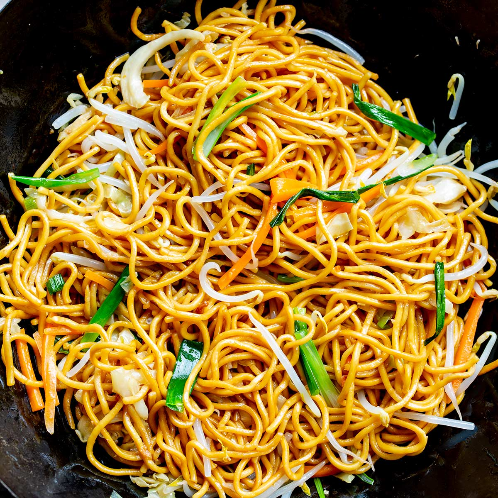

Chow mein

Description
Chow mein is a tasty meal that consists of fried noodles. It is usually paired with some meat and veggies.
For our recipe we are going to use some chicken breast and fresh carrots and other vegetables.
Ingridients:
- 250g egg noodles
- 150g chicken breast
- ½ cup / 1 dl carrots
- 1 cup / 2½ dl Chinese chives
- Half an onion
- Toasted sesame seeds
For the marinade:
- 1/2 tsp of soy sauce
- 1/4 tsp of white pepper powder
- 1/2 tsp of cornstarch
- 1 tablespoon of water
For the sauce:
- 1 tsp of soy sauce
- 1 tsp of dark soy sauce
- 1 tbsp of oyster sauce
- 1/2 tsp of sugar
- 1 tsp of Chinese cooking wine
- Usually the noodle sticks together in the package. Soak the noodle in hot water for 2-3 minutes then it will loosen itself. Do not boil the noodle as we don’t want to overcook it. Drain it. Then place it in airy area to dry out. Or use kitchen towel if you are really hungry.
- As the noodle is in long strip size, we also cut the chicken breast into strip size. It’s good for stir fry and would be easier to eat with the noodle. Marinate the chicken with 1/2 teaspoon of soy sauce, 1/4 teaspoon of white pepper powder. Chicken breast is very lean and can get toughen easily during stir fry, to make it tender and juicy, add a teaspoon of cornstarch as tenderiser and a tablespoon of water which will be absorbed by the chicken.
- For the vegetables, you can use any vegetables you like. Here I have 1/2 cup of onion, 1/2 of carrot and 1 cup of Chinese chives which has very nice garlic flavour. Also cut all the them into strips about 2 inches long.
- Mix 1 teaspoon of soy sauce, 1 teaspoon of dark soy sauce, 2 tablespoons of oyster sauce which is the soul of the sauce, 1/2 teaspoon of sugar and 1 teaspoon of Chinese cooking wine to give more fragrance.
- Cooking the chicken:
Heat up the wok, then heat up a teaspoon of cooking oil. Make sure the cooking surface is coated with oil. By doing this, your food will not stick on the wok. Add the chicken. Place the chicken evenly on the wok and cook for 30 seconds, then flip to another side. Do the same. Then stir fry for 1 minute to cook the meat. Then set aside.
- Cooking the vegetables and combining:
Heat up the wok again, then heat up a tablespoon of cooking oil. Add the onion, stir fry for 30 seconds to release aroma. Add the carrots and Chinese chives. Combine and stir fry for 1 minute to cook a bit. Add the noodle and chicken, stir fry for 30 seconds to combine. Add half of the sauce, stir fry for 30 seconds. Make sure the noodle is all coated with the sauce. Add the rest of the sauce, stir fry for another 30 seconds. Lastly add some sesame oil, stir fry for 10 seconds to combine. Transfer the content to the serving plate. Garnish with toasted sesame seeds. Ready to serve!
All credits to Flying chopsticks on youtube